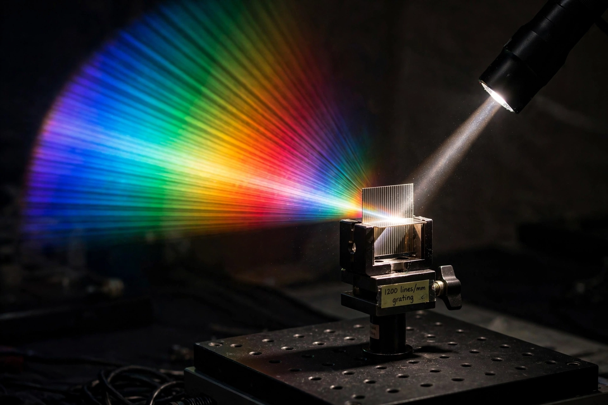

| Type | Optical component |
|---|---|
| Principle | Diffraction and interference |
| Invented | Joseph von Fraunhofer (1821); earlier: David Rittenhouse (1785) |
| Uses | Spectroscopy, monochromators, lasers, optical communications |
| Equation | d sin θ = mλ |

In optics, a diffraction grating is an optical component with a periodic structure that splits and diffracts light into several beams travelling in different directions. The directions of these beams depend on the spacing of the grating and the wavelength of the light, so the grating acts as a dispersive element — producing the familiar rainbow colors seen when light reflects from a CD or DVD.
By the Huygens–Fresnel principle, each groove or slit of the grating acts as a coherent source. Constructive interference occurs where the path difference between adjacent elements is a whole number of wavelengths: d sin θ = mλ, for groove spacing d, order m, and wavelength λ. Because the angle depends on wavelength, white light is spread into spectra of different orders.
Gratings may be transmissive or reflective, and are produced by ruling grooves with a diamond stylus (ruled gratings), by holographic interference patterning, or by replication from a master. Echelle gratings use coarse grooves at steep blaze angles for high-resolution spectroscopy; blazed gratings concentrate light into a chosen order.
Diffraction gratings are the heart of spectrographs used in astronomy and chemistry, of monochromators, tunable lasers, and wavelength-division multiplexing in fiber-optic networks. Their resolving power, R = mN for N illuminated grooves, can exceed that of prisms by orders of magnitude.
From Wikipedia, the free encyclopedia. Recreated from memory.